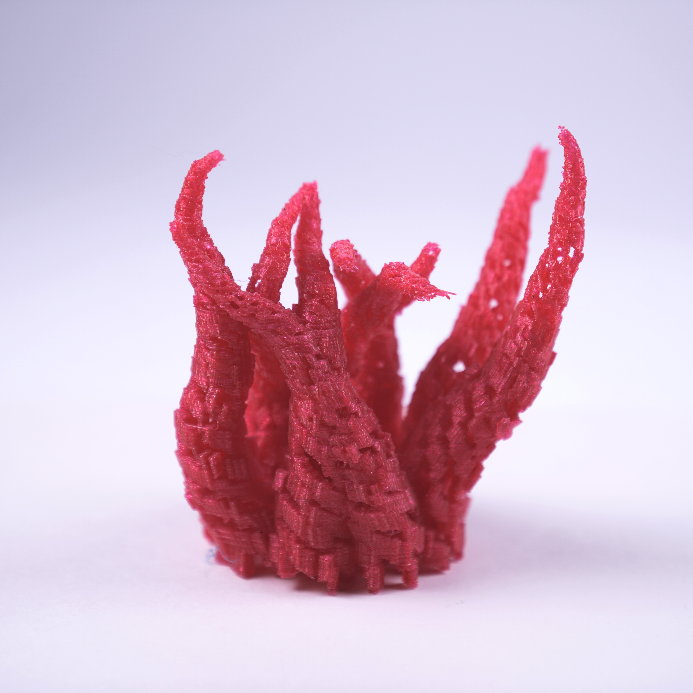
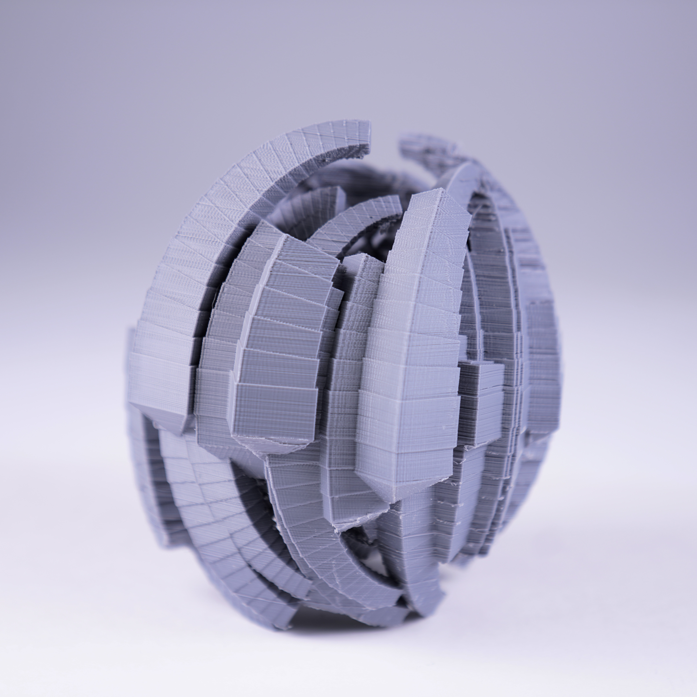

-Generative Fabrication Techniques-
Code-driven fabrication studies built with Structure Synth, custom Processing sketches, and a PETG printer tuned within an inch of its patience.
I sculpted signed-distance fields, marched cubes into the tangible, and remeshed each surface until gravity and layer lines would actually play nice. Every iteration compares how field frequency and mesh relaxation rewrite the same equation in plastic.
"The unreal is more powerful than the real. Because nothing is as perfect as you can imagine it. Because it's only intangible ideas, concepts, beliefs, fantasies that last. Stone crumbles. Wood rots. People, well, they die. But things[...], they can go on and on."
genF1 is the anchor: a PETG print that ran 39.5 hours end to end, translating layered-noise math into a ribboned surface with cellular cavities.
genF2 keeps the base algorithm but shifts the field frequency, exposing how remeshing decisions redraw the silhouette before anything hits the slicer.
genF3 rotates the lattice and relaxes support contact points, balancing negative space against a footprint that can actually hold on to the build plate.


